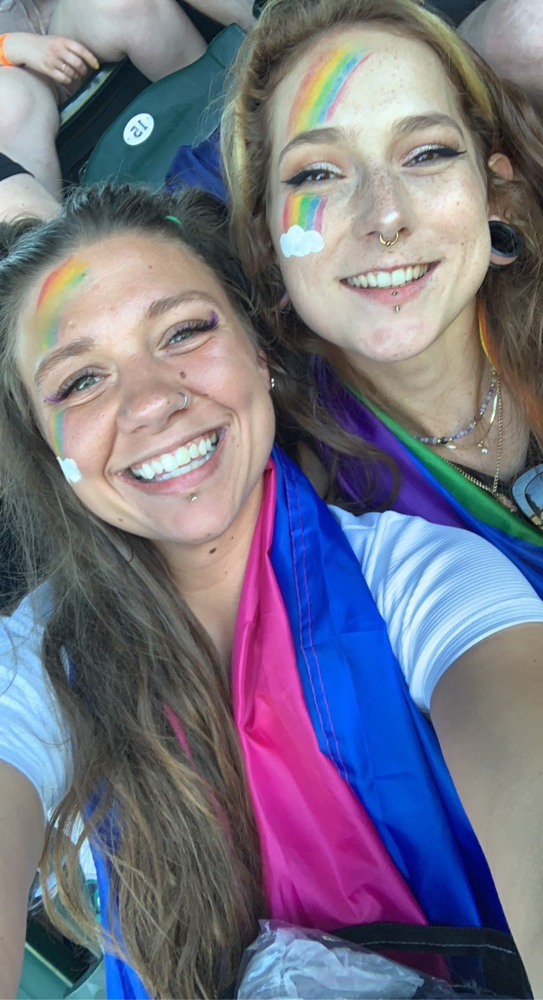
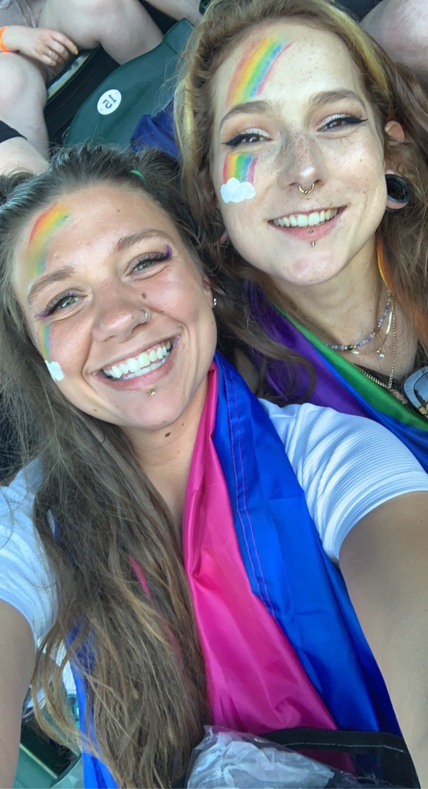

This is a lil site about
lil
me! My name is Kayla and I am brand new to the tech world. I am looking forward to learning a lot and becoming the best coder I can! I grew up in the Portland Metro area and love the city and everything it has to offer. Growing up I've always wanted to help my community in any way that I'm able to, I'm hoping to find a job that will allow me to do my part in this. I'm a queer vegan always looking for the next adventure!
BLACK AND TRANS LIVES MATTER
I am a lady of many interesting hobbies and I'm always open to trying new things. My top three hobbies are:
My interests are evergrowing as well! Three of my interests include:
As someone that enjoys trying new things, I have learned a lot of skills over the years and will continue to grow these skills! Some of what I've aquired so far: